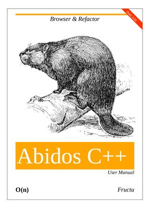

github
Next
Abidos C++ User Manual
fructu
<
fructu@gmail.com
>
Revision History
Revision 0.02
November 2012
Fructu
Draft version starting to write this documentation:
Table of Contents
1. Introduction
1.1. Why this project ?
1.2. But there is another projects like doxygen …
2. Installation
2.1. Get the project
2.2. Make project and install
2.3. The easy way passing one C++ file
2.4. The easy way parsing a set of C++ files
2.5. The hacker way Abidos toolchain explanation
2.6. Whitelist
3. Uninstall